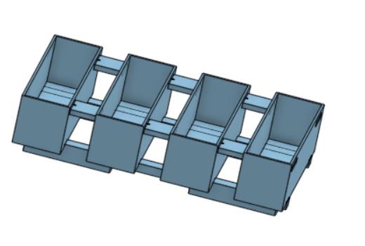
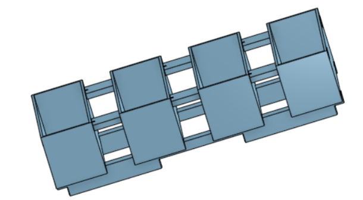

ความคืบหน้าในวันนี้
วันนี้ตอนเช้าขณะเดินทางไปตึก FIBO พวกผมวางแผนกันไว้ว่าจะเตรียมสไลด์ที่ต้องนำเสนอในตอน 10โมงและเมื่อเตรียมสไลด์เสร็จก็จะไปเรียนรู้ใช้ depth camera ต่อ แต่เมื่อถึงเวลาทำงานจริงตอน 9โมงปรากฎว่า depth camera ที่พวกผมจำได้ว่าวางไว้บนโต๊ะก่อนกลับบ้านได้หายไปแล้วจึงทำให้เกิดเรื่องวุ่นวายขึ้น พี่ปอนด์ก็เดินตามหาทั่วตึกส่วนพวกผมก็ต้องเปลี่ยนแผนอย่างกระทันหันไปใช้ tof laser sensor แทน ไม่นานหลังจากที่นำเสนอเสร็จพี่กรีนก็บอกให้พวกผมไปทำพิมพ์ขนมปังให้คล้ายของบริษัท ทำให้เวลาหลังจากนั้นหมดเวลาไปกับการออกแบบพิมพ์ขนมปัง และสุดท้ายแล้ว depth camera เจอในกระเป๋าแอนฟิลด์


กลับหน้าหลัก